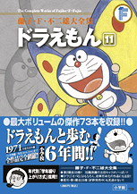

| |

定価：本体1,800円＋税
A5判／764ページ
好評発売中！
★は初めて単行本に収録される
作品です。
※収録内容は変更になる
場合があります。

|
★きりがみクレヨン
（入学準備小学一年生1978年春の号）
バタバタフライ（小学一年生1978年4月号）
ミニカーガレージ（小学一年生1978年5月号）
ふしぎなかみのいえ（小学一年生1978年6月号）
フエールうえ木ばち（小学一年生1978年7月号）
かみなりだいこ（小学一年生1978年8月号）
ヨット大冒険（小学一年生1978年9月号）
ラジコンねんど（小学一年生1978年10月号）
忘れ物おくりとどけ機（小学一年生1978年11月号）
ゲラメソプンピストル（小学一年生1978年12月号）
ミニサンタ（小学一年生1979年1月号）
宇宙探検すごろく（小学一年生1979年2月号）
雪ふらし（小学一年生1979年3月号）
しょうげき波ピストル（小学二年生1979年4月号）
デカチンキ（小学二年生1979年5月号）
ふくびんコンビ（小学二年生1979年6月号）
はなバルーン（小学二年生1979年7月号）
しあわせな人魚姫（小学二年生1979年8月号）
時間よ動け〜っ!!（小学二年生1979年9月号）
強いペットがほしい（小学二年生1979年10月号）
すること入れかえ機（小学二年生1979年11月号）
ツモリガン（小学二年生1979年12月号）
ぼうけんパラシュート（小学二年生1980年1月号）
かわいい石ころの話（小学二生1980年2月号）
自動人形劇（小学二年生1980年3月号）
雪がなくてもスキーはできる
（小学三年生1980年4月号）
タイムマシンがなくなった!!
（小学三年生1980年5月号）
ハッピーバースデイ・ジャイアン
（小学三年生1980年6月号）
エスパースネ夫（小学三年生1980年7月号）
勝利をよぶチアガール手ぶくろ
（小学三年生1980年8月号）
南海の大冒険（小学三年生1980年9月号）
出木杉グッスリ作戦（小学三年生1980年10月号）
かしきり電話（小学三年生1980年11月号）
オキテテヨカッタ（小学三年生1980年12月号）
まあまあ棒（小学三年生1981年1月号）
ジャイアンよい子だねんねしな
（小学三年生1981年2月号）
キンシひょうしき
（小学三年生1981年3月号） |
職業テスト腕章（小学四年生1981年4月号）
ポラマップスコープとポラマップ地図
（小学四年生1981年5月号）
火災予定報知ベル（小学四年生1981年6月号）
あしたの新聞（小学四年生1981年7月号）
力をためる力電池（小学四年生1981年8月号）
無人島の大怪物（小学四年生1981年9月号）
四次元ポケットにスペアがあったのだ
（小学四年生1981年10月号）
なぜか劇がメチャクチャに
（小学四年生1981年11月号）
★さかさカメラ（小学四年生1981年12月号）
だせば当たる!! けん賞用ハガキ
（小学四年生1982年1月号）
落とし物つりぼり（小学四年生1982年2月号）
連想式推理虫メガネ（小学四年生1982年3月号）
新種図鑑で有名になろう（小学五年生1982年4月号）
本物電子ゲーム（小学五年生1982年5月号）
家元かんばん（小学五年生1982年6月号）
カッコータマゴ（小学五年生1982年7月号）
しかしユーレイはでた！（小学五年生1982年8月号）
ほしい人探知機（小学五年生1982年9月号）
いやになったらヒューズをとばせ
（小学五年生1982年10月号）
空飛ぶうす手じゅうたん（小学五年生1982年11月号）
改造チョコQ（小学五年生1982年12月号）
人気スターがまっ黒け（小学五年生1983年1月号）
本はおいしくよもう（小学五年生1983年2月号）
★しあわせ保険機（小学五年生1983年3月号）
SLえんとつ（小学六年生1983年4月号）
真夜中の電話魔（小学六年生1983年5月号）
かぐやロボット（小学六年生1983年6月号）
ゼンマイ式潜地艦（小学六年生1983年7月号）
運動神経コントローラー（小学六年生1983年8月号）
あとはおまかせタッチ手ぶくろ
（小学六年生1983年9月号）
めいわくガリバー（小学六年生1983年10月号）
一晩でカキの実がなった（小学六年生1983年11月号）
ジャイアンへのホットなレター
（小学六年生1983年12月号）
超リアル・ジオラマ作戦（小学六年生1984年1月号）
地球下車マシン（小学六年生1984年2月号）
のび太の息子が家出した（小学六年生1984年3月号）
|